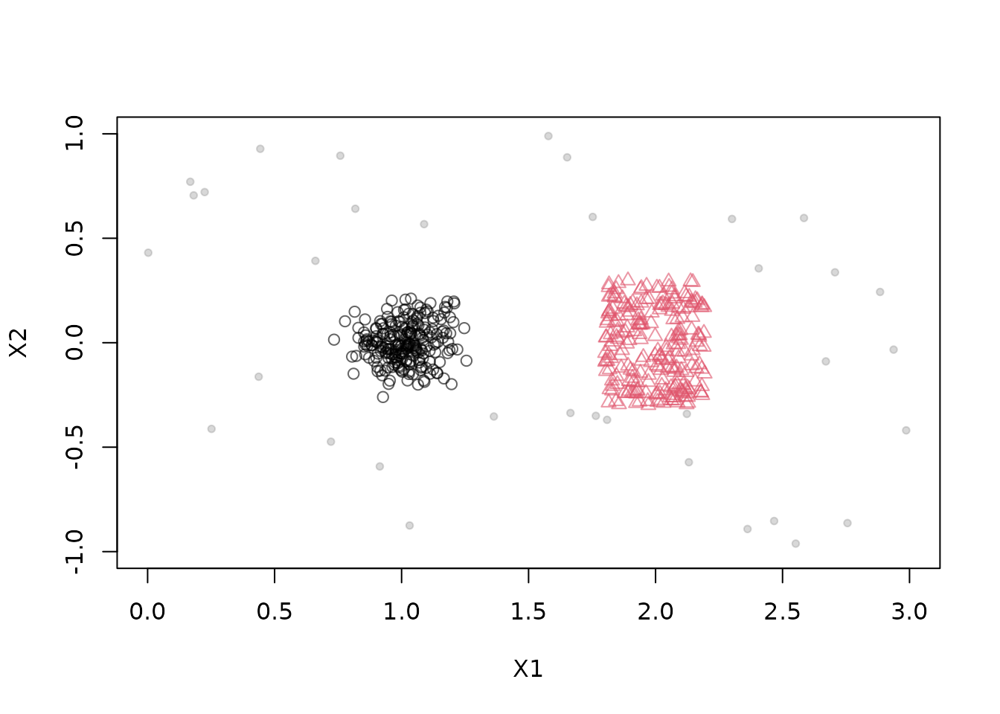
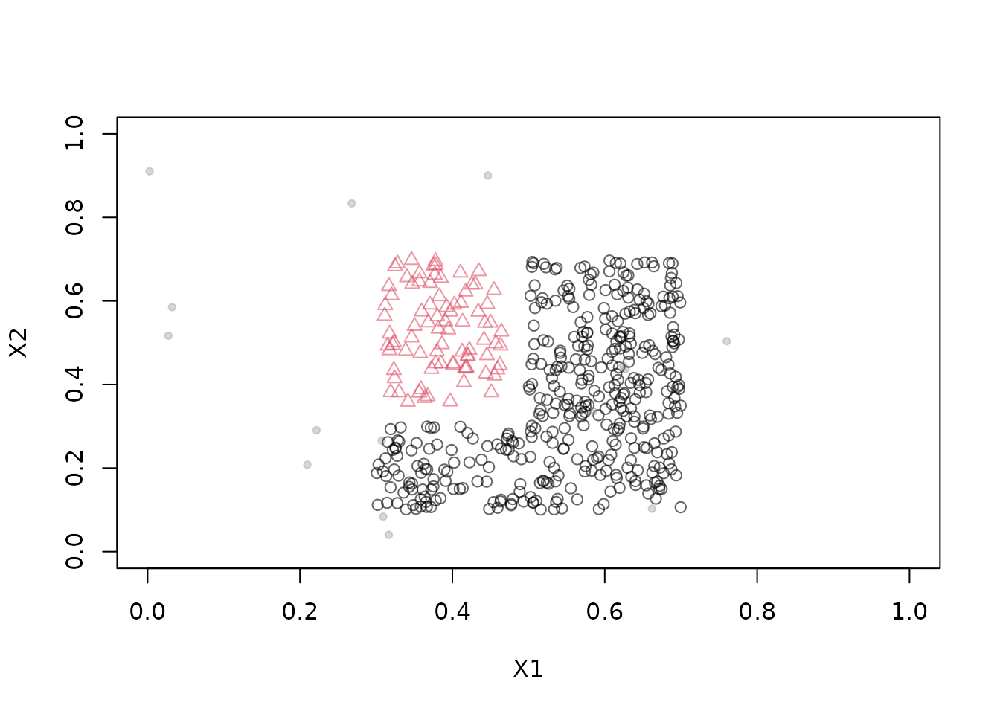
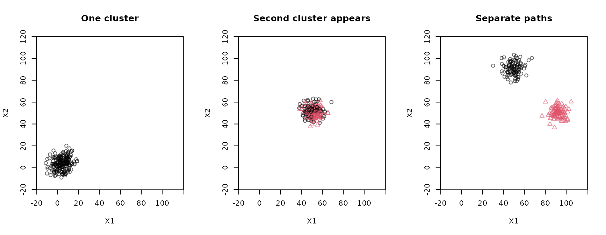
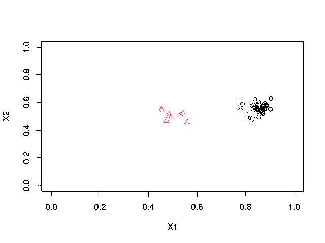
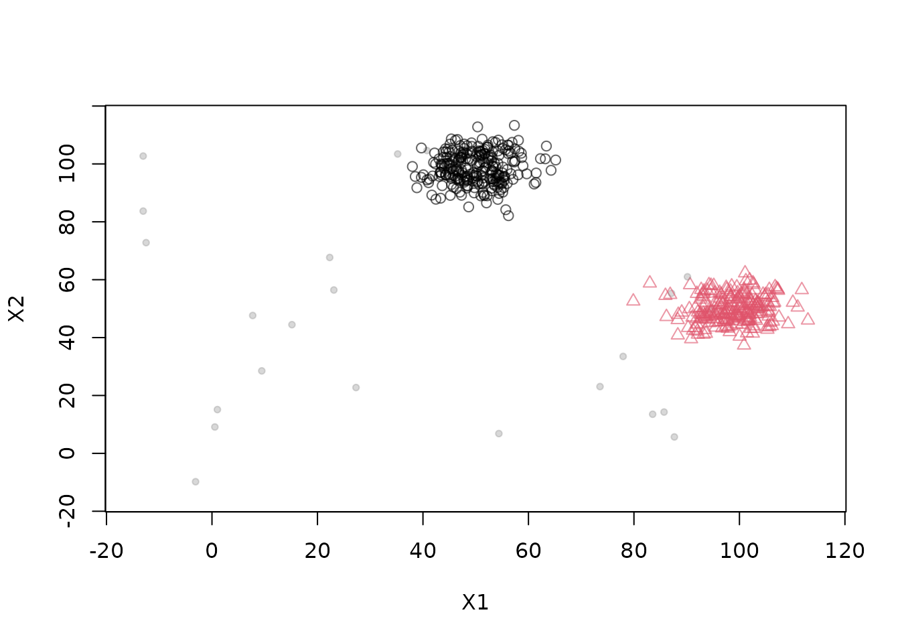
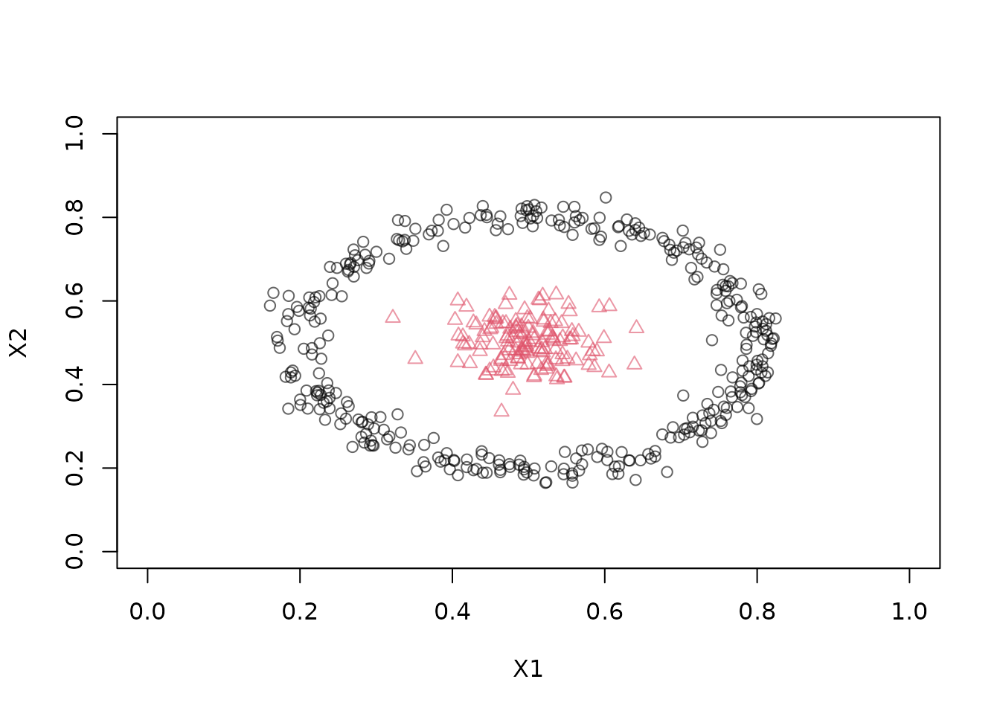

DSD_MG: A flexible Framework to Construct Non-Stationary Data Stream for Evaluation
Michael Hahsler
Source:vignettes/DSD_MG.Rmd
DSD_MG.RmdTesting stream clustering algorithms on non-stationary data requires
streams where the ground truth is known and the way the data changes can
be controlled: clusters that move, grow, shrink, appear, disappear,
split or merge. DSD_MG(), the Data Stream Moving Cluster
Generator provides a flexible framework for building such streams from
individual components.
Instead of one fixed model, a DSD_MG stream is assembled
from a list of Moving Generator Cluster objects
(MGCs). Each MGC is a small, independent
component that describes a single cluster:
- where it is (its center),
- how big it is and what shape it has (the shape parameters),
- how many points it produces (its density),
and, for moving components, how these properties change over time.
DSD_MG() combines the components into one stream. Because
every component has its own behavior, mixing different components
creates complex evolving streams from simple building blocks. This guide
introduces the components, shows how to combine them, and shows how to
change a stream after it has been created. See the help pages
?DSD_MG and ?MGC for the complete
documentation.
Building blocks
The following components are available. All components for a stream must have the stream’s dimensionality.
| Component | Behavior |
|---|---|
MGC_Static() |
A stationary cluster with fixed properties (size, position, etc.). |
MGC_Linear() |
A cluster whose center, density, and shape parameters are linearly interpolated between keyframes. |
MGC_Function() |
A cluster where density, center, and shape parameters are functions of time. |
MGC_Random() |
A cluster that follows a random walk. |
MGC_Noise() |
Uniform random noise in a given area often used to create individual random outliers. |
The shape of a cluster is given by the shape argument,
which is a function that draws a single point from the cluster. Two
shapes are provided: Shape_Gaussian (the default, where
parameter is the standard deviation, one per dimension) and
Shape_Block (a uniform block, where parameter
gives the side lengths). If a single value is given, it is recycled for
all dimensions. New shapes can be defined as functions with the
arguments center and parameter that return a
single point (see the end of this guide).
How the generator works
Generation is driven by a generator time that advances as
points are drawn. Each component has a density. To produce
a point, DSD_MG() chooses a component with a probability
proportional to the current densities of all components, and then draws
a point from the chosen component’s shape at its current center. The
density therefore controls both the relative chance of choosing a
component and, through the total density, how fast generator time
advances: with a total density of 100, approximately 100 points advance
the generator by one time unit. Components that change over time thus
change what the stream looks like, and components can be added or
removed at any time.
Each point is returned with a .class column containing
the label of the component that produced it. Components can share a
label to form one ground-truth cluster, and noise has the label
NA.
Combine static clusters and noise
Start with a Gaussian cluster, a uniform rectangular cluster, and
uniform background noise. parameter gives standard
deviations for Shape_Gaussian and side lengths for
Shape_Block. By default each component gets its own label;
we set them explicitly here and use NA for the noise.
stream <- DSD_MG(dimension = 2,
MGC_Static(density = 45, center = c(1, 0), parameter = 0.1),
MGC_Static(density = 45, center = c(2, 0), parameter = c(0.4, 0.6),
shape = Shape_Block),
MGC_Noise(density = 10, range = rbind(c(0, 3), c(-1, 1))),
labels = c(1, 2, NA)
)
stream
#> Moving Data GeneratorClass: DSD_MG, DSD_R, DSD
#> With 3 clusters in 2 dimensions. Time is 1
get_points(stream, n = 5)
#> X1 X2 .class
#> 1 1.827095 0.14322891 2
#> 2 1.021095 -0.06553463 1
#> 3 2.102185 -0.10974945 2
#> 4 1.110681 -0.14546372 1
#> 5 1.034556 0.02119348 1
plot(stream, n = 500, xlim = c(0, 3), ylim = c(-1, 1))
The total density is 100, so approximately 100 points advance the
generator by one time unit, and the Gaussian component produces about
45% of the points. Noise has label NA in the
.class column.
Supplying the same label to several components makes them form one ground-truth cluster. This makes it easy to build clusters with non-convex shapes. Here three blocks form an L-shaped cluster (label 1) next to a second cluster (label 2):
stream <- DSD_MG(dimension = 2,
MGC_Static(density = 10, center = c(.5, .2), parameter = c(.4, .2),
shape = Shape_Block),
MGC_Static(density = 10, center = c(.6, .5), parameter = c(.2, .4),
shape = Shape_Block),
MGC_Static(density = 5, center = c(.39, .53), parameter = c(.16, .35),
shape = Shape_Block),
MGC_Noise(density = 1, range = rbind(c(0, 1), c(0, 1))),
labels = c(1, 1, 2, NA)
)
plot(stream, n = 500, xlim = c(0, 1), ylim = c(0, 1))
Define movement with keyframes
MGC_Linear() interpolates the center, density, and shape
parameters between keyframes. This lets you describe movement, growth,
and appearance of a cluster with a few points in time. The next example
starts with one cluster. At time 50, a second component appears at the
same location, then moves in another direction. This simulates a cluster
that splits.
c1 <- MGC_Linear(dimension = 2, keyframelist = list(
keyframe(time = 1, density = 20, center = c(0, 0), parameter = 5),
keyframe(time = 50, density = 20, center = c(50, 50), parameter = 5),
keyframe(time = 100, density = 20, center = c(50, 100), parameter = 5)
))
c2 <- MGC_Linear(dimension = 2, keyframelist = list(
keyframe(time = 50, density = 20, center = c(50, 50), parameter = 5),
keyframe(time = 100, density = 20, center = c(100, 50), parameter = 5)
))
stream <- DSD_MG(dimension = 2, c1, c2)
get_keyframes(c1)
#> time parameter density centers reset
#> 1 1 5 20 0, 0 FALSE
#> 2 50 5 20 50, 50 FALSE
#> 3 100 5 20 50, 100 FALSEA linear component produces no points before its first keyframe.
After its last keyframe it keeps its final attributes. A keyframe with
reset = TRUE can make the trajectory repeat, as in
DSD_Benchmark(1).
Generator time is different from the count of requested points. The second component starts after about 980 points: 49 time units at density 20. Once it appears, the total density becomes 40. Plot three short sections around this change and near the end of the movement:
old_par <- par(mfrow = c(1, 3))
plot(stream, n = 200, xlim = c(-15, 115), ylim = c(-15, 115),
main = "One cluster")
invisible(get_points(stream, n = 780))
plot(stream, n = 200, xlim = c(-15, 115), ylim = c(-15, 115),
main = "Second cluster appears")
invisible(get_points(stream, n = 1400))
plot(stream, n = 200, xlim = c(-15, 115), ylim = c(-15, 115),
main = "Separate paths")
par(old_par)Keyframes can also be added to an existing component with
add_keyframe(), and removed with
remove_keyframe(). Each keyframe can use a different
density or shape parameter, so a cluster can also grow, shrink, fade in,
or fade out.
c3 <- MGC_Linear(dimension = 2, shape = Shape_Block)
add_keyframe(c3, time = 1, density = 25, parameter = c(10, 10), center = c(0, 0))
add_keyframe(c3, time = 100, density = 25, parameter = c(30, 30),
center = c(100, 100))
get_keyframes(c3)
#> time parameter density centers reset
#> 1 1 10, 10 25 0, 0 FALSE
#> 2 100 30, 30 25 100, 100 FALSESpecify movement as a function of time
MGC_Function() accepts functions of generator time for
density, center, and shape parameters. This allows arbitrary
trajectories without defining keyframes. For example, a block-shaped
cluster can move along the diagonal while it grows:
growing <- MGC_Function(
density = function(t) 100,
parameter = function(t) 1 * t,
center = function(t) c(t, t),
shape = Shape_Block
)Here a Gaussian cluster travels around a circle while a static cluster remains at the center.
orbit <- MGC_Function(
density = function(t) 20,
center = function(t) c(0.5 + 0.35 * cos(t / 10),
0.5 + 0.35 * sin(t / 10)),
parameter = function(t) 0.03
)
stream <- DSD_MG(dimension = 2, orbit,
MGC_Static(density = 5, center = c(0.5, 0.5), parameter = 0.03))The GIF below shows the functional generator in batches of 50 points
using animate_data(), making the orbiting cluster’s
movement visible. It loops automatically at ten frames per second and is
embedded directly in the HTML.
Knitr creates the GIF using the gifski R package.
Install gifski before rendering to include the animation.
The animation chunk is skipped when gifski is unavailable
or the output is not HTML.
set.seed(1000)
reset_stream(stream)
animate_data(stream, n = 1500, horizon = 50, wait = 0,
xlim = c(0, 1), ylim = c(0, 1))
For interactive exploration, the following example uses the
animation package and is not run during vignette
builds.
reset_stream(stream)
animate_data(stream, n = 1500, horizon = 100,
xlim = c(0, 1), ylim = c(0, 1))
animation::ani.replay()Clusters that move randomly
MGC_Random() creates a cluster that follows a random
walk. center is its starting position and
randomness is the maximum amount it moves in one time step.
Mixing random and static components gives streams where some clusters
drift unpredictably while others stay in place.
stream <- DSD_MG(dimension = 2,
MGC_Random(density = 100, center = c(1, 0), parameter = 0.1,
randomness = 0.2),
MGC_Random(density = 100, center = c(2, 0), parameter = 0.4,
shape = Shape_Block, randomness = 0.2)
)
stream
#> Moving Data GeneratorClass: DSD_MG, DSD_R, DSD
#> With 2 clusters in 2 dimensions. Time is 1Add and remove components
Generators can be modified after construction, so a stream can be
changed while it is running. get_clusters() returns the
component list; add_cluster() adds a component and
remove_cluster() takes an index in that list.
stream <- DSD_MG(dimension = 2,
MGC_Linear(dimension = 2, keyframelist = list(
keyframe(time = 1, density = 20, center = c(0, 0), parameter = 5),
keyframe(time = 100, density = 20, center = c(100, 100), parameter = 5))),
MGC_Static(density = 20, center = c(50, 50), parameter = 5))
noise <- MGC_Noise(density = 2, range = rbind(c(-15, 115), c(-15, 115)))
add_cluster(stream, noise, label = NA)
length(get_clusters(stream))
#> [1] 3
plot(stream, n = 500, xlim = c(-15, 115), ylim = c(-15, 115))
remove_cluster(stream, i = 3)
length(get_clusters(stream))
#> [1] 2Use add_keyframe() and remove_keyframe() to
edit a linear component’s trajectory. Stream and component objects
contain mutable state: updating a component can also affect a stream
that contains it.
Define your own shape
A shape is a function with the arguments center and
parameter that returns a single point. As an example, here
is a ring shape in two dimensions, where parameter is the
radius and the points are spread uniformly around the center with a
little noise.
Shape_Ring <- function(center, parameter) {
angle <- runif(1, 0, 2 * pi)
center + rnorm(1, mean = parameter[1], sd = 0.02) * c(cos(angle), sin(angle))
}
stream <- DSD_MG(dimension = 2,
MGC_Static(density = 50, center = c(0.5, 0.5), parameter = 0.3,
shape = Shape_Ring),
MGC_Static(density = 25, center = c(0.5, 0.5), parameter = 0.05)
)
plot(stream, n = 500, xlim = c(0, 1), ylim = c(0, 1))
Use the stream
A DSD_MG stream is a regular DSD object. It
can be used like any other stream to cluster and evaluate, for example
with update() and evaluate_stream(). Because
the generator knows which component produced each point, the true labels
are available for external evaluation, even when the clusters move. See
Evaluating Non-stationary
Clusters for how to evaluate clustering on moving data and Clustering data streams with DBSTREAM for a
clustering algorithm that is able to follow such streams.